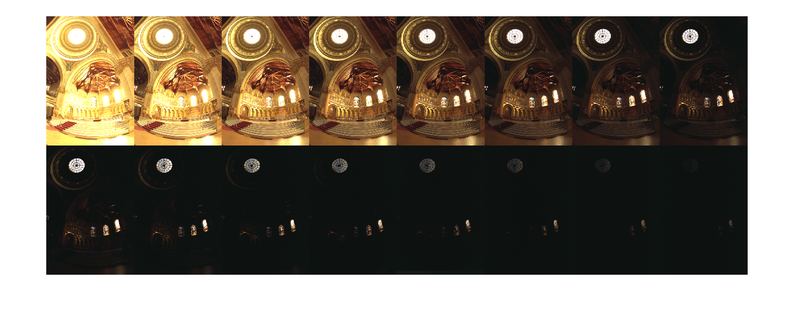
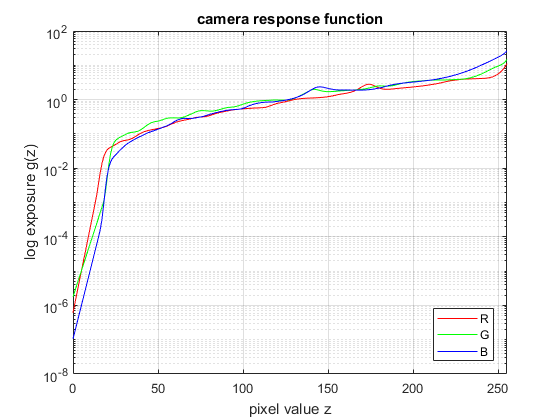
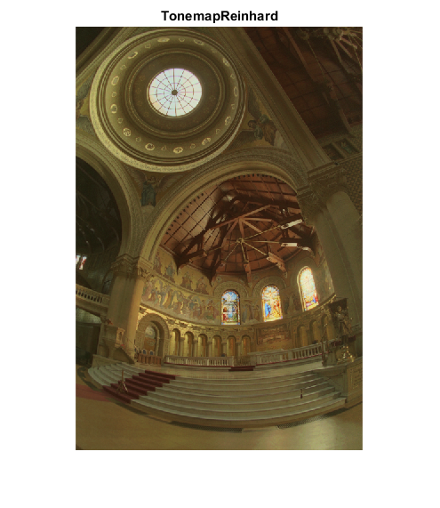
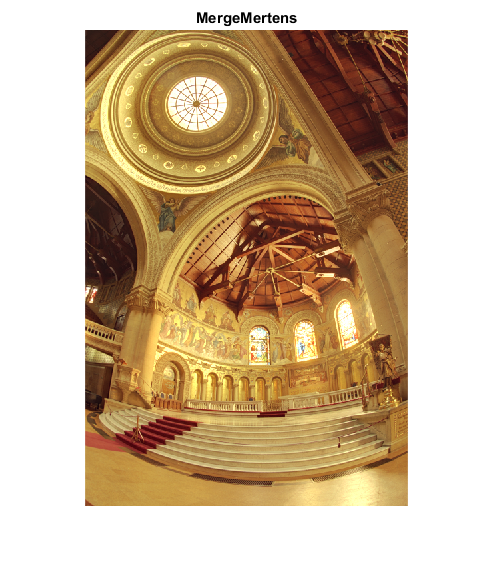
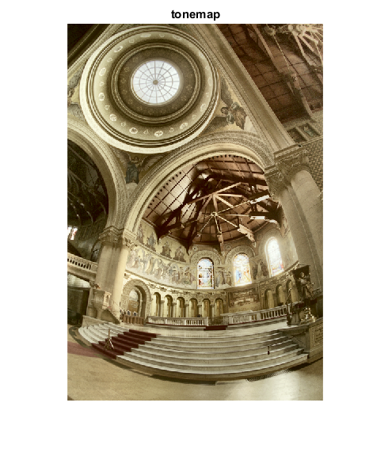

High Dynamic Range Imaging
Sources:
Contents
Introduction
Today most digital images and imaging devices use 8 bits per channel thus limiting the dynamic range of the device to two orders of magnitude (actually 256 levels), while human eye can adapt to lighting conditions varying by ten orders of magnitude. When we take photographs of a real world scene bright regions may be overexposed, while the dark ones may be underexposed, so we can't capture all details using a single exposure. HDR imaging works with images that use more that 8 bits per channel (usually 32-bit float values), allowing much wider dynamic range.
There are different ways to obtain HDR images, but the most common one is to use photographs of the scene taken with different exposure values. To combine this exposures it is useful to know your camera's response function and there are algorithms to estimate it. After the HDR image has been blended it has to be converted back to 8-bit to view it on usual displays. This process is called tonemapping. Additional complexities arise when objects of the scene or camera move between shots, since images with different exposures should be registered and aligned.
In this tutorial we show how to generate and display HDR image from an exposure sequence. In our case images are already aligned and there are no moving objects. We also demonstrate an alternative approach called exposure fusion that produces low dynamic range image. Each step of HDR pipeline can be implemented using different algorithms so take a look at the reference manual to see them all.
Load images and exposure times
Choose which images to load: memorial, office, or user-defined
use_memorial = true; use_office = false; if use_memorial % samples from OpenCV fpath = fullfile(mexopencv.root(),'test'); files = dir(fullfile(fpath,'memorial*.png')); files = sort({files.name}); elseif use_office % samples from Image Processing Toolbox fpath = fileparts(which('office_1.jpg')); files = dir(fullfile(fpath,'office_*.jpg')); files = sort({files.name}); else % custom images fmts = imformats(); filtspec = strjoin(strcat('*.', [fmts.ext]), ';'); [files,fpath] = uigetfile(filtspec, 'Select images', 'MultiSelect','on'); if fpath==0, error('No file selected'); end end files = cellfun(@(f) fullfile(fpath,f), files(:), 'UniformOutput',false); assert(numel(files) >= 2, 'Not enough images');
First we read exposure times
if use_memorial % the folder should contain images and memorial.txt, % a text file that contains file names and inverse exposure times. if exist(fullfile(fpath,'memorial.txt'), 'file') == 2 fid = fopen(fullfile(fpath,'memorial.txt'), 'rt'); C = textscan(fid, '%s %f'); fclose(fid); [~,ord] = sort(C{1}); etimes = 1 ./ C{2}(ord); else etimes = 2.^(5:-1:-10); end else % read exposure times from EXIF tags etimes = zeros(size(files)); for i=1:numel(files) meta = imfinfo(files{i}); assert(isfield(meta, 'DigitalCamera'), 'Missing EXIF'); etimes(i) = meta.DigitalCamera.ExposureTime; %fstop = meta.DigitalCamera.FNumber; % expect the same f-stop number end end % sort by exposure times [etimes,ord] = sort(etimes, 'descend'); files = files(ord);
Next we load input images
images = cellfun(@(f) imread(f), files, 'UniformOutput',false); if mexopencv.require('images') montage(cat(4,images{:}), 'Size',[2 NaN]) end if ~mexopencv.isOctave() t = table(files, strtrim(cellstr(rats(etimes))), ... 'VariableNames',{'File','ExposureTime'}); disp(t) end
Warning: Image is too big to fit on screen; displaying at 33%
File ExposureTime
_____________________________________________________ ____________
'C:\Users\Amro\Desktop\mexopencv\test\memorial00.png' '32'
'C:\Users\Amro\Desktop\mexopencv\test\memorial01.png' '16'
'C:\Users\Amro\Desktop\mexopencv\test\memorial02.png' '8'
'C:\Users\Amro\Desktop\mexopencv\test\memorial03.png' '4'
'C:\Users\Amro\Desktop\mexopencv\test\memorial04.png' '2'
'C:\Users\Amro\Desktop\mexopencv\test\memorial05.png' '1'
'C:\Users\Amro\Desktop\mexopencv\test\memorial06.png' '1/2'
'C:\Users\Amro\Desktop\mexopencv\test\memorial07.png' '1/4'
'C:\Users\Amro\Desktop\mexopencv\test\memorial08.png' '1/8'
'C:\Users\Amro\Desktop\mexopencv\test\memorial09.png' '1/16'
'C:\Users\Amro\Desktop\mexopencv\test\memorial10.png' '1/32'
'C:\Users\Amro\Desktop\mexopencv\test\memorial11.png' '1/64'
'C:\Users\Amro\Desktop\mexopencv\test\memorial12.png' '1/128'
'C:\Users\Amro\Desktop\mexopencv\test\memorial13.png' '1/256'
'C:\Users\Amro\Desktop\mexopencv\test\memorial14.png' '1/512'
'C:\Users\Amro\Desktop\mexopencv\test\memorial15.png' '1/1024'
Estimate camera response
It is necessary to know camera response function (CRF) for a lot of HDR construction algorithms. We use one of the calibration algorithms to estimate inverse CRF for all 256 pixel values.
if true calibrate = cv.CalibrateDebevec(); %calibrate.Samples = 100; %calibrate.Lambda = 20; else calibrate = cv.CalibrateRobertson(); end tic response = calibrate.process(images, etimes); toc
Elapsed time is 5.308985 seconds.
plot CRF
figure(2)
h = semilogy(0:255, reshape(response, 256, []));
set(h, {'Color'},{'r';'g';'b'})
legend(h, {'R', 'G', 'B'}, 'Location','southeast')
xlabel('pixel value z')
ylabel('log exposure g(z)')
title('camera response function')
xlim([0 255]), grid onMake HDR image
We use Debevec's weighting scheme to construct HDR image using response calculated in the previous item.
if true merge = cv.MergeDebevec(); else merge = cv.MergeRobertson(); end tic hdr = merge.process(images, etimes, response); toc fprintf('HDR: min=%f, max=%f\n', min(hdr(:)), max(hdr(:)))
Elapsed time is 0.174492 seconds. HDR: min=0.001132, max=835.111511
Tonemap HDR image
Since we want to see our results on common LDR display, we have to map our HDR image to 8-bit range preserving most details. It is the main goal of tonemapping methods. We use tonemapper with bilateral filtering and set 2.2 as the value for gamma correction.
if false tone = cv.TonemapDurand('Gamma',2.2); else tone = cv.TonemapReinhard('Gamma',2.2, ... 'Intensity',-8, 'LightAdaptation',0.6, 'ColorAdaptation',0.5); end tic ldr = tone.process(hdr); toc fprintf('LDR: min=%f, max=%f\n', min(ldr(:)), max(ldr(:))) figure(3), imshow(ldr, []), title('TonemapReinhard')
Elapsed time is 0.049119 seconds. LDR: min=0.000000, max=1.000000 Warning: Image is too big to fit on screen; displaying at 67%
Perform exposure fusion
There is an alternative way to merge our exposures in case when we don't need HDR image. This process is called exposure fusion and produces LDR image that doesn't require gamma correction. It also doesn't use exposure values of the photographs.
fuse = cv.MergeMertens(); tic fusion = fuse.process(images); toc fprintf('LDR: min=%f, max=%f\n', min(fusion(:)), max(fusion(:))) figure(4), imshow(fusion, []), title('MergeMertens')
Elapsed time is 0.470477 seconds. LDR: min=-0.005889, max=1.771424 Warning: Image is too big to fit on screen; displaying at 67%
Write results
Now it's time to look at the results. Note that HDR image can't be stored in one of common image formats, so we save it to Radiance image (.hdr). Also all HDR imaging functions return results in [0,1] range so we should multiply result by 255.
if true to8bit = @(im) uint8(im * 255); else to8bit = @(im) cv.convertTo(im, 'RType','uint8', 'Alpha',255); end cv.imwrite(fullfile(tempdir(), 'hdr.hdr'), hdr); cv.imwrite(fullfile(tempdir(), 'ldr.png'), to8bit(ldr)); cv.imwrite(fullfile(tempdir(), 'fusion.png'), to8bit(fusion));
Compare against MATLAB's implementation
%HACK: HDRREAD/MAKEHDR/TONEMAP not implemented in Octave if ~mexopencv.isOctave() && mexopencv.require('images') % HDR image if true && ~use_memorial % create HDR image from LDR images using MAKEHDR if use_memorial if true opts = {'RelativeExposure',etimes./etimes(1)}; else ev = log2(etimes ./ (log2(max(etimes) / min(etimes)) * min(etimes))); opts = {'ExposureValues',ev}; end else opts = {}; % exposure times stored in EXIF end hdr2 = makehdr(files, opts{:}); elseif true % read premade HDR image if use_memorial fname = fullfile(mexopencv.root(),'test','memorial.hdr'); if exist(fname, 'file') ~= 2 url = 'http://www.pauldebevec.com/Research/HDR/memorial.hdr'; urlwrite(url, fname); end elseif use_office fname = which('office.hdr'); else fname = fullfile(tempdir(), 'hdr.hdr'); end if true hdr2 = hdrread(fname); else hdr2 = cv.imread(fname, 'Unchanged',true); end else % use previous HDR result hdr2 = hdr; end % tonemapping: HDR -> LDR tic ldr2 = tonemap(hdr2); toc figure(5), imshow(ldr2), title('tonemap') imwrite(ldr2, fullfile(tempdir(), 'ldr2.png')); end
Elapsed time is 2.497523 seconds. Warning: Image is too big to fit on screen; displaying at 67%